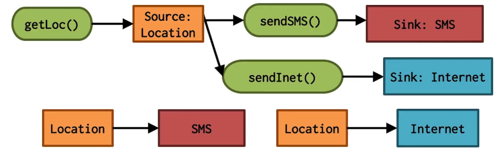

NetSec Lecture Notes - Lesson 11 - Mobile Malware
Mobile Malware
Mobile Device Quiz
According to Wikipedia, which of these devices is a mobile device?
- Smart phone
- False
- Smart phone held by a person
- True
- Self driving car
- True
- Robot
- True
- We won’t use that definition, as it is unhelpful.
- For our purposes a mobile device == a portable, wireless device small enough to be used while held in the hand
Forensics Quiz
Which of hte following characteristics are associated with mobile devices (M) and which are for stationary computers (C)
- Specialized hardware
- M
- Standardized hardware
- C
- Many different (versions of) operating systems
- M
- Usually runs Windows, MAC OS, or Linux
- C
- Large storage capability
- C
- Large number of accessories: cameras, GPS
- M
iOS Malware
- Very common platform.
- Many apps are malware designed to steal user data
- Malware apps can stell get onto user devices even after kicked off from the app store
- Apple allows users to purchase and download apps through iTunes, and cable it over to devices. Device checks with iTunes if it was purchased properly.
- Attackers can MiTM this process by capturing an authorization code from iTunes, and then develop a program to simulate iTunes to phones, and trick the phone into using a malicious app that didn’t come from the app store
- Called “FairPlay MiTM”
Android Malware
- AccuTrack
- This application turns an Android smartphone into a GPS tracker
- Ackposts
- This Trojan steals contact information from the compromised device and uploads them to a remote server
- Acknetdoor
- This trojan opens a backdoor on the infected device andsends the IP address to a remote server
- Steek/Fatakr
- Is a fraudulent app advertising an online income solution. Some of the samples have the capability to steal privacy related information and send SMS messages
- Tapsnake/Droisnake
- Posts the phones location to a web service
- ZertSecurity
- This malicious apps try to trick a compromised user to insert his banking account details which will then be sent to the attackers
- Zitmo/Citmo
- Tries to steal confidential banking authentication codes (mTAN messages) sent to the infected device
- Many more
- Long list shown here, not transcribed
Trends
Free Antivirus Apps
- Comodo Security & Antivirus
- CM Security Antivirus AppLock
- 360 Security - Antivirus Boost
- Sophos Free Antivirus and Security
- Malwarebytes Anti-Malware
- Bitdefender Antivirus Free
Anti-Virus Android
- Due to architecture of phones (sandboxing, limited cpu, etc), they’re inherently less vulnerable than computers. That gap is decreasing over time, though
- Quotes:
- “Even security companies know the risk is low – that’s why apps are packaged with other selling points.” - AndroidCentral
- “Symantec sees an important role to playi n helping to protect data and mobile devices from being exposed to risk…”
- “While Symantec sees its purpose in the mobile landscape as providing security against malware, fraud and scams; we also protect devicest against loss and theft – loss of the device itself, as well as the information on it. In addition, Symantec helps businesses protect and manage their data being stored or transmitted through the mobile devices of their employees”
Lifetime of iOS Malware
A Toolchain Attack: XcodeGhost
- XcodeGhost (2015)
- Malware found in unofficial distributions of Xcode targeted at Chinese developers
- Apps compiled with these versions of Xcode are infected with XcodeGhost
- Collect information on devices and upload it to C&C server
Example Attack on App Store: Jekyll
- Jekyll (2013)
- Deliberately create a vulnerable app
- Exploit the intended vulnerabilities, e.g. with the crafted input, to introduce new execution paths via ROP, send SMS, email, Tweet, etc
- App Store review, without the correct input, cannot reveal these malicious paths
- Example of differing control flow with/without special input
- Capabilities include
- Install/uninstall apps
- Get list of installed apps, running apps, front most apps
- Launch an installed app
- Send/receive SMS
- Make phone call, monitor incoming call
- Get device ID, Apple ID, ad ID
- Take photo
Toolchain Attacks Quiz
- What code did the attackers modify? – The Xcode compiler and linker
- The code modified the UI Window class and the UIDevice class, adding extra files to any app created with XCodeGhost
- What kind of information can an infected app obtain about the device that is running the app?
- Current time
- App’s name
- App’s bundle identifier
- The device’s name and type
- System’s language and country
- Network type
- Device UUID
Hardening the Toolchain Quiz
List the four areas of the C based toolchain where hardening can occur
- Configuration
- Preprocessor
- Compiler
- Linker
Mobile Malware Detection
- Kirin
- Very simple approach
- System that checks for supsicious combinations of permissions
- Definition of 9 (manually compiled) rules
- Basic support for multi-app analysis
- RiskRanker
- Simple static analysis tool
- Based on manually-defined suspicious features
- DVM code loading (from assets)
- Call to crypto-related APIs before loading native code
- Sensitive calls w/o users’ interaction
- It found a zero-day: AnserverBot
- DroidRanger
- Based on both static & dynamic analysis
- It uses manually defined heuristics
- Features
- Manifest information, packages, location of used resources
- Loading of native code (from where?)
- Sensitive API tracing
- Syscall-level tracing
- It found two zero-days: DroidKungFu, Plankton
- DREBEN
- Lightweight static analysis tool
- SVM with high-dimensional vector space (545k+)
- used hardware componens
- requested permissions
- API calls
- filtered intents
- network addresses
- It runs on real devices (~10 seconds/app)
Clone Detection
- Most malware samples are repackaged versions of legitimate apps
- Why?
- Most effective way to write & distribute malware
- The “Cool App” is already written and well-advertised
- Why?
- Static analysis tools
- DroidMOSS (based on fuzzy hashing of methods)
- DNADroid (similarity based on PDG (program dependency g raphs))
- PiggyApp (focus on PiggyBacked apps)
- AdRob (investigate AD-related issues)
- Behavior analysis tools
- Generic sandboxes
- Andrubis
- Mobile Sandbox
- APK Analyzer
- Syscall-level analysis
- CopperDroid (based on QEMU modifications)
- CrowDroid (cloud-based anomaly detection)
- PREC (anomaly detection against per-app model)
- Practical Root Exploit Containment
- Generic sandboxes
Information Leakage Detection
- PiOS
- It performs static analysis on iOS apps to detect information leakages
- One of the few works for iOS (many challenges)
- Initially the code is encrypted (memory dump required)
- Analysis on ARM assembly (no bytecode)
- Dynamic dispatch implemetned with indirect jumps
- Statically analyzed 1,400 apps; More than half leaked device ID
- TaintDroid
- Modifications to the Android framework to performa dynamic taint tracking
- Support for variable-level and message-level taints
- Only 14% performance overhead
- 15 apps out of 30 leaked location info
- WhyPer
- Are the requested permissions aligned with user’s expectations?
- Compare app’s permissions against its app-store description
- Based on NLP techniques
- Limited to permissions related to camera, microphone, and contact list
Data Flow Analysis

- Source-to-sink flows
- Sources: Location, Calendar, Contacts, Device ID, etc.
- Sinks: Internet, SMS, Disk, etc
- Malware/Greyware analysis
- Data flow summaries enable enterprise-specific policies
- API Misuse and data theft detection
- Automatic generation of app privacy policies
- Avoid liability, protect consumer privacy
- Vulnerability discovery
Challenges
- Android is 3.4M+ lines of complex code
- Uses reflection, callbacks, native code
- Scalability
- Whole system analysis is impractical
- Soundness
- Avoid missing flows
- Precision
- Minimize false positives
STAMP Approach
- Given that analyzing the full Android stack is impractical, the STAMP approach is to abstract the Android part of the stack into models and focus on the App itself
- Model Android/Java
- Sources and sinks
- Data structures
- Callbacks
- 500+ models
- Model Android/Java
Data Flows
- 30+ types of sensitive data, including
- Account data
- Audio
- Calendar
- Call log
- Camera
- Contacts
- Device ID
- Whole-program anlaysis
- context sensitive
- 10+ types of data sinks / exit points, including:
- Internet (socket)
- SMS
- System Logs
- Webview/Browser
- File System
- Broadcast Message
- Each pair of source+sink is a flow type
- 396 flow types
- Unique flow type count = sources * sinks